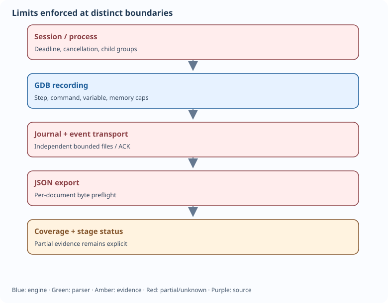

34 · Deadlines, child ownership, and resource limits #
Key terms #
| Term | Plain meaning |
|---|---|
| Deadline | The maximum allowed time for a supervised task or session. |
| Process group | A way to manage a tool and its child processes together when stopping or cancelling work. |
>
The big picture #
Stage 1 uses a monotonic wall deadline, explicitly owned subprocesses, bounded captured output, and Linux inferior limits. These mechanisms limit accidental runaway work; they do not sandbox C code or certify that all forked processes were observed. Entry starts the pipeline; compiler and diagnostic stages use the supervised subprocess path.
src/supervisor.rs: deadline and cancellation context #
Principal signatures: pub async fn scope<T>(seconds: u64, future: impl Future<Output = T>) -> T (src/supervisor.rs:106-132), pub async fn scope_until<T>(end: Instant, future: impl Future<Output = T>) -> T (src/supervisor.rs:134-136), pub fn deadline() -> Instant, pub fn remaining() -> Duration, and pub fn stage_deadline(seconds: u64) -> Instant (src/supervisor.rs:138-153). scope installs task-local DEADLINE and cancellation token, plus a signal task listening for SIGINT/SIGTERM; the signal task is aborted on drop. It does not itself wrap future in tokio::time::timeout: callers use deadlines in waits and commands. scope_until clamps a stage to the earlier of its own end or the enclosing deadline. If called outside a scope, deadline() supplies a 300-second fallback; do not treat that as the configured CLI timeout. trace_program validates limits before entering scope(config.limits.timeout_seconds.max(1), ...) (src/trace.rs:131-165), and stages clamp their own budgets afterward. request_cancel() wakes cancellation() via Notify; outside the scope cancelled() is false and cancellation() is pending (src/supervisor.rs:76-104). timeout_error(operation: &str) -> EngineError names the exhausted operation (src/supervisor.rs:155-159).
src/supervisor.rs: subprocess lifecycle #
Principal types/functions: OwnedChild::spawn(cmd: &mut Command) -> io::Result<Self> and OwnedChild::terminate(&mut self) (src/supervisor.rs:161-198); ProcessOutput { cancelled, status, stdout, stderr, timed_out, output_truncated } (src/supervisor.rs:200-207); pub async fn output(cmd: &mut Command, end: Instant, cap: usize) -> Result<ProcessOutput> (src/supervisor.rs:226-304). spawn requests a new process group, kill_on_drop(true), and Linux subreaper ownership. output rejects already-cancelled/expired launches, nulls stdin, pipes both output streams, and concurrently drains each to its own cap while continuing to read/discard bytes beyond the cap. It waits for the direct child's status and both pipes; a successful parent is not allowed to leave a grandchild holding a pipe open (src/supervisor.rs:209-280).
tokio::select! {
_ = cancellation() => { was_cancelled = true; owned.terminate().await; break; }
_ = &mut stdout, if !out_done => out_done = true,
_ = &mut stderr, if !err_done => err_done = true,
result = owned.child.wait(), if status.is_none() => { /* reap and kill group */ }
_ = tokio::time::sleep_until(end.into()) => {
timed_out = true; owned.terminate().await; break;
}
}This is the decision point at src/supervisor.rs:253-280, abbreviated only in the parent-exit arm. On cancel/timeout terminate kills descendant process groups and the leader, waits/reaps for up to two seconds, and offers each unfinished pipe a further bounded 100 ms to retain already produced bytes (src/supervisor.rs:175-187,281-303). Drop also starts killing a group on early unwinding, but cannot promise the same asynchronous reaping as explicit termination. enable_subreaper, descendants, and reap_descendants (src/supervisor.rs:12-59) inspect Linux /proc with a defensive 4,096-descendant scan bound; they target known PIDs, not waitpid(-1) which might steal other Tokio children's status. output_truncated reports capture-cap exhaustion; status can remain None on cancellation/timeout. stage(started: Instant, begin: Instant, status: StageStatus, exit: Option<i32>, reason: Option<String>, complete: bool, partial: bool) -> StageResult records timing/status/completeness, not proof of total process-tree coverage (src/supervisor.rs:306-325; src/models.rs:12-44). Tests cover cancellation waking a stalled wait while retaining partial stdout, timeout with inherited pipes, timeout output, and a parent that exits before its grandchild (src/supervisor.rs:327-409).
src/resource_limits.rs: configured budgets versus enforcement #
Principal type/function: ExecutionLimits and pub fn validate(&self) -> Result<()> (src/resource_limits.rs:48-198). Defaults include 1,000 steps/snapshots, ten seconds whole-session wall time, 256 MiB inferior address space, 1 MiB captured program output, 10,000 allocations, 16 child processes, 128 MiB journal budget, 32 MiB resident-record accounting, and separate 128 MiB final JSON budget (src/resource_limits.rs:120-149). validate rejects a zero step/snapshot/read budget, zero or over-one-year timeout, inferior memory below 16 MiB or overflow, and zero command/journal/resident/export budgets; other counters need not all be positive (src/resource_limits.rs:152-198). These limits are not interchangeable: max_trace_bytes is journal accounting; max_json_export_bytes counts serialized UTF-8 including newline; max_trace_memory_bytes is not total Rust RSS. The final audit measured a 1,961-byte capped journal with a 22,883-byte final JSON and a separate export-cap failure with no emitted JSON.
Enforcement signatures: pub fn apply_pre_exec_limits(cmd: &mut Command, limits: &ExecutionLimits) (src/resource_limits.rs:200-225) installs RLIMIT_AS, CPU, FSIZE, NOFILE and CORE via a pre-exec hook for a directly launched inferior. pub fn apply_diagnostic_limits(cmd: &mut Command, limits: &ExecutionLimits) omits RLIMIT_AS for tool/ASan compatibility (src/resource_limits.rs:227-249). pub fn limit_stopped_inferior(pid: u32, limits: &ExecutionLimits) -> io::Result<()> applies prlimit to the GDB-stopped inferior, not GDB, after its initial main breakpoint; startup before that stop is not covered by this action (src/resource_limits.rs:251-276). These functions offer different paths; do not imply all three are applied to every child. set_rlimit intentionally ignores individual kernel failures and other limits remain in play (src/resource_limits.rs:278-291). RLIMIT_NPROC is deliberately absent because it is per real user, not per inferior tree (src/resource_limits.rs:36-41,220-222). Fixed file/open-file caps are 64 MiB and 256 descriptors (src/resource_limits.rs:29-34). set_process_group and kill_process_group arrange a group and send SIGKILL to group/leader best-effort (src/resource_limits.rs:293-307).
Optional cgroup: CgroupGuard::create(limits: &ExecutionLimits) -> Option<CgroupGuard>, attach(&self, pid: u32) -> bool, and kill_all(&self) (src/resource_limits.rs:309-380). Creation needs a writable delegated cgroup v2 subtree; it writes memory.max and pids.max, returning None if unavailable. Attachment can fail, cgroup.kill requires kernel support, and drop only attempts directory removal. A configured process count is therefore best effort, not an unconditional per-tree enforcement claim. No unit tests live in resource_limits.rs; the existing suite's subprocess/resource regressions and the V2 recording contract exercise and qualify the integrated behavior. The release closure further narrows heap completeness to verified observed PIDs plus the followed inferior; a silent fork remains unknown.
Diagram notes #
Resource boundaries #


Deadline, output, GDB, journal, transport and export controls operate at different points and do not form one global memory bound.